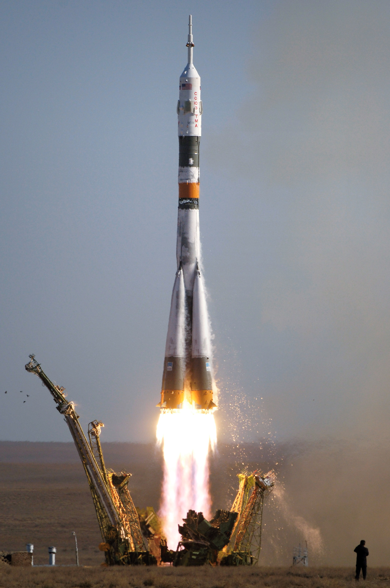
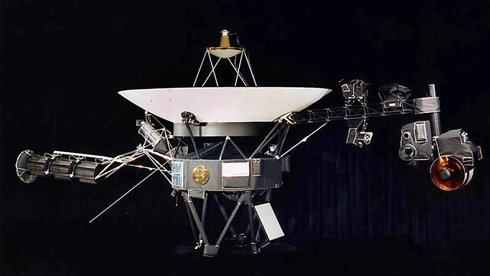
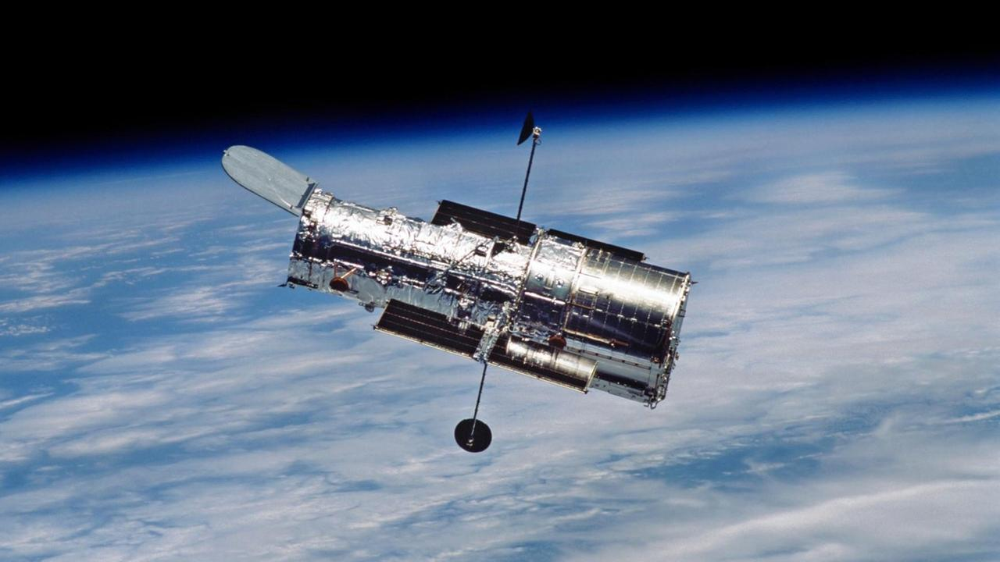
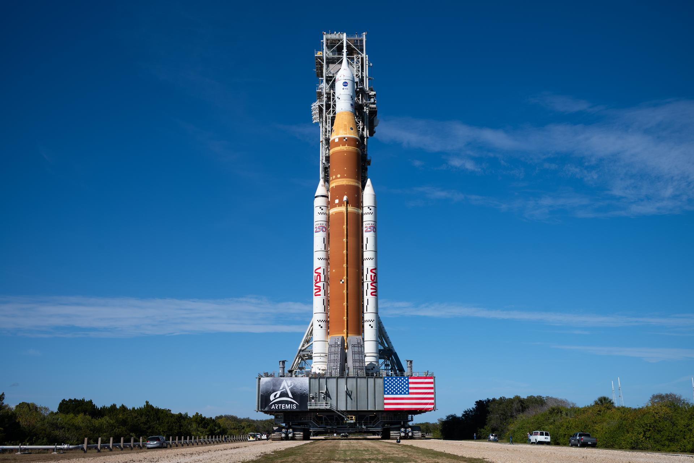
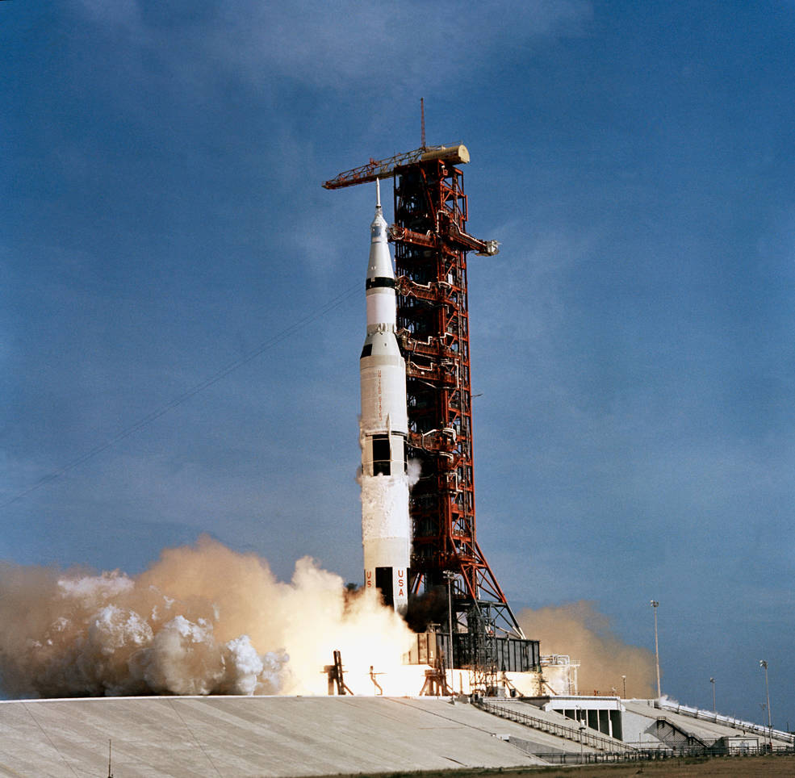

🚀 Space Technology
Human engineering, spacecraft, rockets, stations, and exploration tools.

Soyuz Rocket
One of the most reliable rockets ever built.
The Soyuz rocket has been launching astronauts and cargo since 1966.
It is known for its reliability and long operational history.
⭐ Key Facts • First flight: 1966 • Height: 50 meters • Country: Russia • Missions: Crewed + cargo • Launches: 1,900+
⭐ Why It Matters: Soyuz has been the backbone of human spaceflight for decades.
⭐ Key Facts • First flight: 1966 • Height: 50 meters • Country: Russia • Missions: Crewed + cargo • Launches: 1,900+
⭐ Why It Matters: Soyuz has been the backbone of human spaceflight for decades.

Voyager Spacecraft
Humanity’s farthest explorers.
Voyager 1 and 2 launched in 1977 to explore the outer planets.
They are now in interstellar space.
⭐ Key Facts • Launched: 1977 • Power: Radioisotope generators • Famous feature: Golden Record • Status: Still transmitting
⭐ Why It Matters: Voyager revealed new moons, rings, and atmospheric features of the outer planets.
⭐ Key Facts • Launched: 1977 • Power: Radioisotope generators • Famous feature: Golden Record • Status: Still transmitting
⭐ Why It Matters: Voyager revealed new moons, rings, and atmospheric features of the outer planets.

Voyager 2
The only spacecraft to visit Uranus and Neptune.
Voyager 2 performed flybys of Jupiter, Saturn, Uranus, and Neptune.
⭐ Key Facts • Only probe to visit Uranus & Neptune • Discovered new moons • Studied magnetic fields • Now in interstellar space
⭐ Why It Matters: Voyager 2 expanded our knowledge of the outer Solar System.
⭐ Key Facts • Only probe to visit Uranus & Neptune • Discovered new moons • Studied magnetic fields • Now in interstellar space
⭐ Why It Matters: Voyager 2 expanded our knowledge of the outer Solar System.

International Space Station
Humanity’s laboratory in space.
The ISS is a modular space station orbiting Earth since 1998.
⭐ Key Facts • Orbit height: ~420 km • Speed: 28,000 km/h • Crew: 7 • Partners: NASA, ESA, JAXA, Roscosmos, CSA
⭐ Why It Matters: The ISS is essential for long‑duration space research and future missions to Mars.
⭐ Key Facts • Orbit height: ~420 km • Speed: 28,000 km/h • Crew: 7 • Partners: NASA, ESA, JAXA, Roscosmos, CSA
⭐ Why It Matters: The ISS is essential for long‑duration space research and future missions to Mars.

Hubble Space Telescope
One of the most important scientific instruments ever built.
Hubble orbits Earth and captures high‑resolution images of space.
⭐ Key Facts • Launched: 1990 • Orbit height: ~540 km • Mirror: 2.4 meters • Operator: NASA + ESA
⭐ Why It Matters: Hubble revolutionized our understanding of the universe.
⭐ Key Facts • Launched: 1990 • Orbit height: ~540 km • Mirror: 2.4 meters • Operator: NASA + ESA
⭐ Why It Matters: Hubble revolutionized our understanding of the universe.

NASA SLS (Artemis)
The rocket that will return humans to the Moon.
The Space Launch System is NASA’s newest super‑heavy rocket.
⭐ Key Facts • Height: 98 meters • Boosters: Solid rocket boosters • Payload: Orion spacecraft • Mission: Artemis program
⭐ Why It Matters: SLS will enable human missions to the Moon and Mars.
⭐ Key Facts • Height: 98 meters • Boosters: Solid rocket boosters • Payload: Orion spacecraft • Mission: Artemis program
⭐ Why It Matters: SLS will enable human missions to the Moon and Mars.

Saturn V
The rocket that took humans to the Moon.
Saturn V is the most powerful rocket ever successfully flown.
⭐ Key Facts • Height: 110 meters • Thrust: 7.6 million pounds • Missions: Apollo 8–17 • Success rate: 100%
⭐ Why It Matters: Saturn V made the Apollo Moon landings possible.
⭐ Key Facts • Height: 110 meters • Thrust: 7.6 million pounds • Missions: Apollo 8–17 • Success rate: 100%
⭐ Why It Matters: Saturn V made the Apollo Moon landings possible.